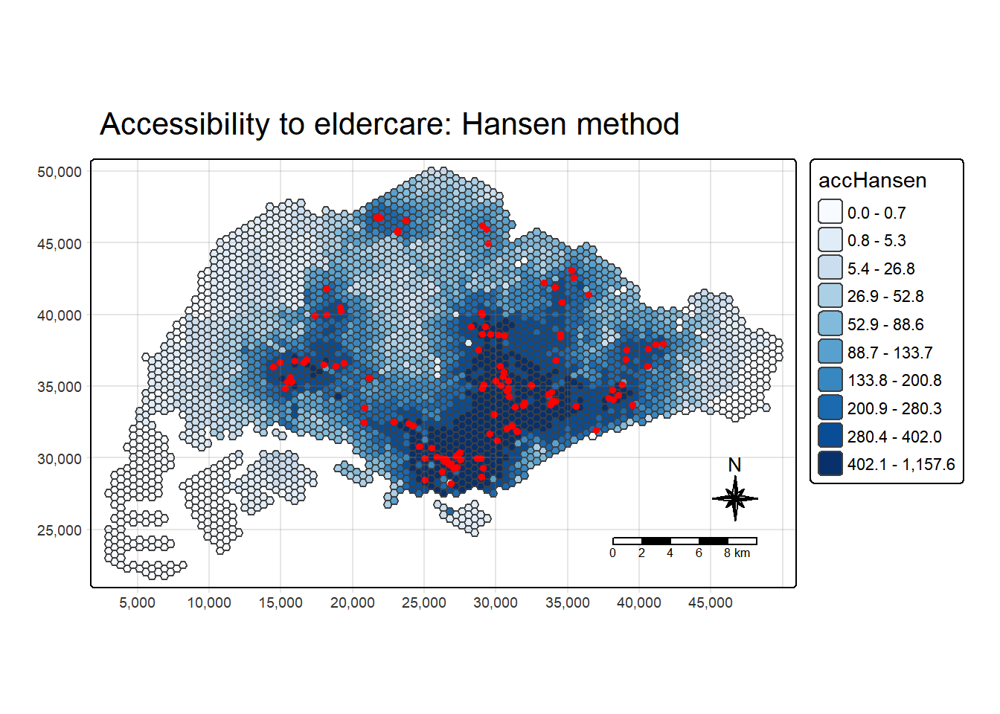
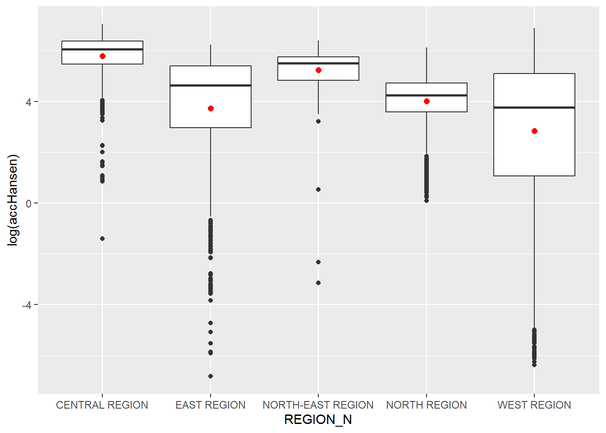
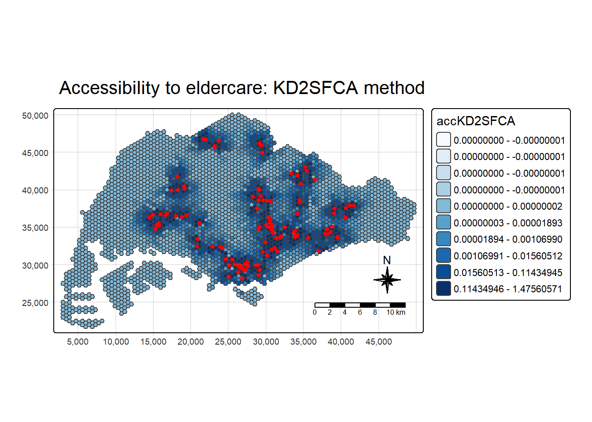
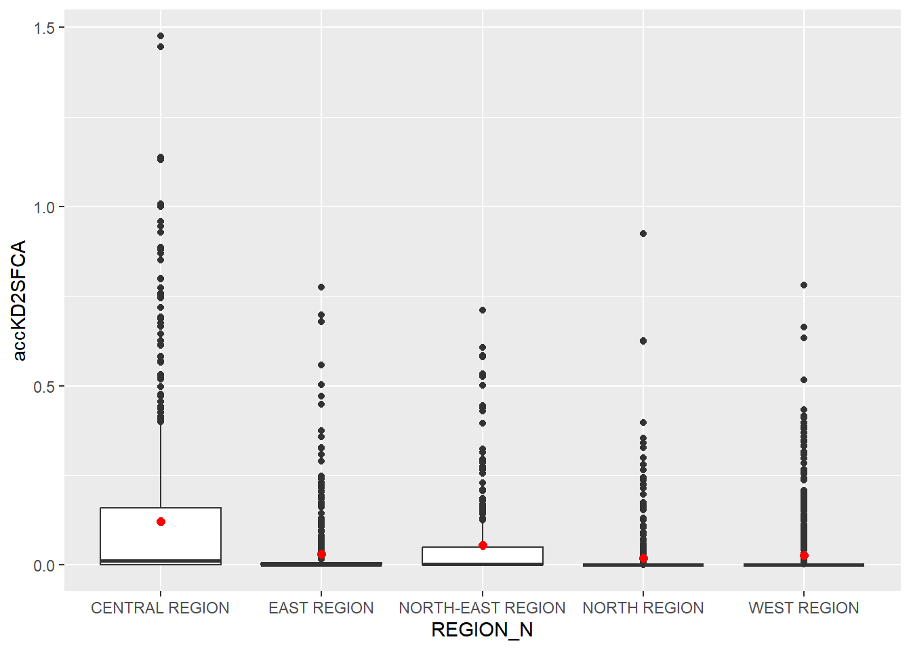
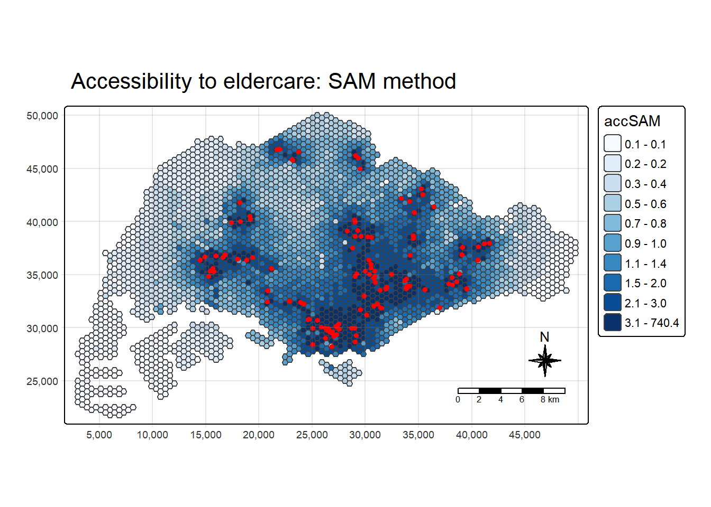
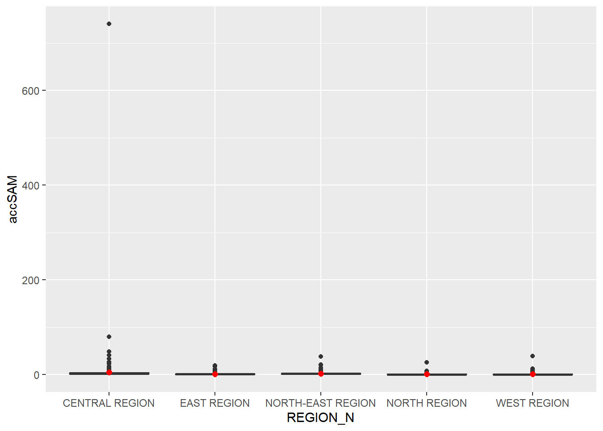

pacman::p_load(tmap, SpatialAcc, sf,
ggstatsplot, reshape2,
tidyverse)Hands on Exercise 7
Modelling Geographical Accessibility
Overview
Accessibility is basically about how easy it is for people to reach the services they need. A clinic that is 300m away from your home is easier to get to than one that is 8km away, and a clinic that is shared by thousands of other people is also harder to get into than one that only serves a few hundred. So when we talk about geographical accessibility, we are really looking at two things at the same time: how far away a service is, and how many people are competing for it.
In this exercise we will model the accessibility of eldercare services in Singapore. Instead of working with planning areas that vary a lot in size, the demand side is represented by a layer of 250m hexagons, so each hexagon becomes a small pocket of demand and every eldercare centre becomes a point of supply. We will then use 3 different accessibility measures to see how the picture changes depending on the method used.
Objectives
By the end of this exercise, the aim is to be able to:
Import GIS polygon and point data into R and keep them as simple feature data frames using the
sfpackage.Import aspatial data (the distance matrix) and reshape it into a format the modelling functions can use.
Compute accessibility using Hansen’s potential model, the KD2SFCA method and the Spatial Accessibility Measure (SAM).
Visualise the results with
tmapfor the spatial view andggplot2for the statistical view.
Data
There are 4 datasets used in this exercise.
Subzone Boundary Map
MP14_SUBZONE_NO_SEA_PL is the URA Master Plan 2014 subzone boundary layer, downloaded from data.gov.sg. It is mainly used later on to tag each hexagon with the planning region it falls in.
Hexagon Layer
hexagons is a layer of 250m radius hexagons covering Singapore, saved as an ESRI shapefile. It was generated with st_make_grid() from the sf package. These hexagons represent the demand side (where the elderly population would be).
Eldercare Services
ELDERCARE contains the locations of eldercare services in Singapore, also from data.gov.sg. It comes in both shapefile and kml format, but the shapefile version is the one used here. These points represent the supply side.
Origin-Destination Distance Matrix
OD_Matrix is a csv file that gives the distance between every hexagon and every eldercare centre. It has 6 fields:
origin_id: the id of the origin, which matches thefidin the hexagon layer.destination_id: the id of the destination, which matches thefidin the eldercare layer.entry_cost: the perpendicular distance from the origin to the nearest road.network_cost: the actual distance travelled along the road network between the origin and the destination.exit_cost: the perpendicular distance from the nearest road to the destination.total_cost: the sum of the 3 costs above.
All the cost fields are in metres.
Apart from the subzone boundary, the other 3 datasets were specially prepared by the course instructor for teaching and research use. So permission is needed before using them for anything outside of the course.
Getting Started
First, the packages needed for this exercise are loaded.
sffor handling the geospatial dataSpatialAccfor the actual accessibility calculationstidyversefor the attribute data handling (mainlyreadr,dplyrandtidyr) as well asggplot2for the statistical graphicstmapfor thematic mappingggstatsplotandreshape2for the supporting statistical work
tidyverse already bundles readr, dplyr, tidyr, ggplot2 and a few others, so there is no need to load these one by one.
Geospatial Data Wrangling
Importing the geospatial data
We start off by loading in all 3 geospatial layers, which are the subzone boundaries, the hexagons and the eldercare locations.
mpsz <- st_read(dsn = "data/geospatial/MP14_subzone", layer = "MP14_SUBZONE_NO_SEA_PL")Reading layer `MP14_SUBZONE_NO_SEA_PL' from data source
`C:\cjmheidii\ISSS626 - Geospatial\Hands-on_Ex\data\geospatial\MP14_subzone'
using driver `ESRI Shapefile'
Simple feature collection with 323 features and 15 fields
Geometry type: MULTIPOLYGON
Dimension: XY
Bounding box: xmin: 2667.538 ymin: 15748.72 xmax: 56396.44 ymax: 50256.33
Projected CRS: SVY21hexagons <- st_read(dsn = "data/geospatial/Hexagons", layer = "hexagons") Reading layer `hexagons' from data source
`C:\cjmheidii\ISSS626 - Geospatial\Hands-on_Ex\data\geospatial\Hexagons'
using driver `ESRI Shapefile'
Simple feature collection with 3125 features and 6 fields
Geometry type: POLYGON
Dimension: XY
Bounding box: xmin: 2667.538 ymin: 21506.33 xmax: 50010.26 ymax: 50256.33
Projected CRS: SVY21 / Singapore TMeldercare <- st_read(dsn = "data/geospatial/ELDERCARE", layer = "ELDERCARE") Reading layer `ELDERCARE' from data source
`C:\cjmheidii\ISSS626 - Geospatial\Hands-on_Ex\data\geospatial\ELDERCARE'
using driver `ESRI Shapefile'
Simple feature collection with 120 features and 19 fields
Geometry type: POINT
Dimension: XY
Bounding box: xmin: 14481.92 ymin: 28218.43 xmax: 41665.14 ymax: 46804.9
Projected CRS: SVY21 / Singapore TMThe report above shows that the R object used to contain the imported MP14_SUBZONE_WEB_PL shapefile is called mpsz and it is a simple feature object. The geometry type is multipolygon.
It is also worth noticing that the subzone layer did not come with any proper EPSG information, which means we need to sort out the CRS before doing anything else.
Updating the CRS
All 3 layers are now assigned to the Singapore projected coordinate system (EPSG:3414), so that they all sit on the same coordinate system and the distances are in metres.
mpsz <- st_transform(mpsz, 3414)
eldercare <- st_transform(eldercare, 3414)
hexagons <- st_transform(hexagons, 3414)To double check that the transformation worked, we can look at the CRS information of one of the layers.
st_crs(mpsz)Coordinate Reference System:
User input: EPSG:3414
wkt:
PROJCRS["SVY21 / Singapore TM",
BASEGEOGCRS["SVY21",
DATUM["SVY21",
ELLIPSOID["WGS 84",6378137,298.257223563,
LENGTHUNIT["metre",1]]],
PRIMEM["Greenwich",0,
ANGLEUNIT["degree",0.0174532925199433]],
ID["EPSG",4757]],
CONVERSION["Singapore Transverse Mercator",
METHOD["Transverse Mercator",
ID["EPSG",9807]],
PARAMETER["Latitude of natural origin",1.36666666666667,
ANGLEUNIT["degree",0.0174532925199433],
ID["EPSG",8801]],
PARAMETER["Longitude of natural origin",103.833333333333,
ANGLEUNIT["degree",0.0174532925199433],
ID["EPSG",8802]],
PARAMETER["Scale factor at natural origin",1,
SCALEUNIT["unity",1],
ID["EPSG",8805]],
PARAMETER["False easting",28001.642,
LENGTHUNIT["metre",1],
ID["EPSG",8806]],
PARAMETER["False northing",38744.572,
LENGTHUNIT["metre",1],
ID["EPSG",8807]]],
CS[Cartesian,2],
AXIS["northing (N)",north,
ORDER[1],
LENGTHUNIT["metre",1]],
AXIS["easting (E)",east,
ORDER[2],
LENGTHUNIT["metre",1]],
USAGE[
SCOPE["Cadastre, engineering survey, topographic mapping."],
AREA["Singapore - onshore and offshore."],
BBOX[1.13,103.59,1.47,104.07]],
ID["EPSG",3414]]We can see that the EPSG is now showing as 3414, so we are good to go.
Cleaning the attribute fields
Both the eldercare and hexagon layers have quite a few columns that we will not be using. So these are dropped and only the id (and the address for eldercare) are kept.
At the same time, two new columns are created. A capacity column is added to the eldercare layer and a demand column is added to the hexagon layer.
eldercare <- eldercare %>%
select(fid, ADDRESSPOS) %>%
mutate(capacity = 100)hexagons <- hexagons %>%
select(fid) %>%
mutate(demand = 100)
Important
For this exercise, a constant value of 100 is used for both the demand and the capacity. This is just to keep things simple and to focus on the method. In a real study, the actual elderly population in each hexagon and the actual capacity of each eldercare centre should be used, otherwise the results will only reflect distance and not the true pressure on the services.
Aspatial Data Wrangling
Importing the distance matrix
Next we bring in the OD matrix csv file. It is stored as a tibble called ODMatrix.
ODMatrix <- read_csv("data/aspatial/OD_Matrix.csv", skip = 0)Tidying the distance matrix
The imported OD matrix is in a long format, where every row is a single origin-destination pair. However, the accessibility functions expect a proper matrix where each row is an origin (the hexagons) and each column is a destination (the eldercare centres).
So we reshape the data from long to wide, using only the total_cost column since this already includes the entry and exit distances. The origin id column is removed afterwards so that only the distance values are left in the matrix.
distmat <- ODMatrix %>%
select(origin_id, destination_id, total_cost) %>%
spread(destination_id, total_cost)%>%
select(c(-c('origin_id')))The spread() function still works but it has been replaced by pivot_wider() in newer versions of tidyr, so either can be used.
Right now the distances are all in metres. To keep the numbers easier to read and to work well with the distance decay parameters later on, they are converted to kilometres and saved as a matrix.
distmat_km <- as.matrix(distmat/1000)Modelling and Visualising Accessibility using Hansen Method
Hansen’s potential model is one of the simplest accessibility measures around. For each origin (hexagon), it adds up the capacity of every destination (eldercare centre), but each one is discounted by how far away it is. The further the centre, the less it contributes. So a hexagon that is surrounded by lots of nearby centres will get a high score, and a hexagon that is far from everything will get a low one.
One thing to note is that this basic form does not take into account the demand competing for each centre. It only looks at what is available around you, and not how many other people are sharing it.
Computing Hansen’s accessibility
The ac() function from SpatialAcc is used here. It takes in the demand, the capacity, the distance matrix, and the decay settings, and the family argument is what tells it which method to use. Do read through the function’s arguments at least once before running it, so that it is clear what each input is doing.
acc_Hansen <- data.frame(ac(hexagons$demand,
eldercare$capacity,
distmat_km,
#d0 = 50,
power = 2,
family = "Hansen"))The default column name that comes out is quite messy, so it is renamed to accHansen.
colnames(acc_Hansen) <- "accHansen"Next the result is converted into a tibble and joined back to the hexagon layer, so that every hexagon now has its own accessibility score. The output is a simple feature data frame called hexagon_Hansen.
acc_Hansen <- as_tibble(acc_Hansen)All of the steps above can also be put together into a single code chunk if preferred.
acc_Hansen <- data.frame(ac(hexagons$demand,
eldercare$capacity,
distmat_km,
#d0 = 50,
power = 0.5,
family = "Hansen"))
colnames(acc_Hansen) <- "accHansen"
acc_Hansen <- as_tibble(acc_Hansen)
hexagon_Hansen <- bind_cols(hexagons, acc_Hansen)
Important
The decay power (power) controls how quickly the benefit of a centre drops off with distance. A bigger value means a steeper drop. Make sure the same value is used in the single chunk and the step-by-step version, since a different power will give different scores and make the results look inconsistent.
Visualising Hansen’s accessibility
Extracting the map extent
First, the bounding box of the hexagon layer is extracted. This will be reused for every map in this exercise so that all the maps are drawn in exactly the same frame and are easier to compare.
mapex <- st_bbox(hexagons)Mapping the accessibility
Now the accessibility map is plotted with tmap. The hexagons are shaded by their score using 10 quantile classes with a blue palette, and the eldercare centres are overlaid as red dots. A title, compass, scale bar and grid are added to make it a proper map.
tm_shape(hexagon_Hansen,
bbox = mapex) +
tm_polygons(fill = "accHansen",
fill.scale = tm_scale_intervals(
style = "quantile",
n = 10,
values = "brewer.blues")) +
tm_shape(eldercare) +
tm_dots(size = 0.3,
fill = "red",
col = "black") +
tm_title("Accessibility to eldercare: Hansen method") +
tm_layout(frame = TRUE) +
tm_compass(type="8star", size = 2) +
tm_scalebar() +
tm_grid(alpha = 0.2)
Analysis of the map.
The accessibility to elderly healthcare is the greatest in the South Central Region in Singapore, which can be seen through the dark blue hexagons in the region paired with a heavily clustered set of red dots packed at the same region.
Most of the West and far East area have edges score close to zero as shown from the visual as the dark blue hexagons and red dots density gradually thins out the further away from the South Central Region.
This shows that the Elderly Healthcare accessibility is gradually harder to reach the further from the hot spot of the south central region, where in the Far east and West areas, it can be considered that no elderly healthcare is accessible from there.
Statistical graphic Visualisation
A map is good at showing where, but it is harder to see how the values compare across the different parts of the country. So here we compare the distribution of Hansen’s accessibility across the URA planning regions.
To do this, the planning region field is first attached to each hexagon with a spatial join against the subzone layer.
hexagon_Hansen <- st_join(hexagon_Hansen, mpsz,
join = st_intersects)Then a boxplot is drawn for each region. A log transformation is applied to the accessibility values since they are very skewed, and the mean of each region is marked with a red dot.
ggplot(data=hexagon_Hansen,
aes(y = log(accHansen),
x= REGION_N)) +
geom_boxplot() +
geom_point(stat="summary",
fun.y="mean",
colour ="red",
size=2)
Analysis of the plot.
The box plot supports the Accessibility graph plotted earlier.
The Central Region has the highest median accessibility with a tight spread, followed closely by the North-East Region, which means most hexagons in these two regions are well served. The North Region sits in the middle.
The East and West Regions have much wider spreads, and the West Region in particular has the lowest median and the widest box. Its upper whisker is as high as the Central Region’s, which suggests that accessibility within the west is very uneven, with some well-served pockets alongside areas with almost no access. The mean (red dot) is below the median in all regions because of the low outliers on the log scale.
Accessibility using the KD2SFCA Method
How it works
KD2SFCA stands for the Kernel Density 2-Step Floating Catchment Area method. As the name says, it works in two steps.
In the first step, every eldercare centre gets a supply-to-demand ratio, which is its capacity divided by the total (distance-weighted) demand that falls within its catchment. In the second step, each hexagon adds up the ratios of all the centres that it can reach within the catchment, again weighted by distance.
The big difference from Hansen is that this method brings demand into the picture. A centre that is surrounded by a lot of people is not as helpful to each person as one with the same capacity and fewer people nearby. The catchment is set with a distance threshold (d0), so centres that are beyond that distance do not count at all.
Computing KD2SFCA accessibility
The steps here are the same as what was done for Hansen, so a few of them are combined in one chunk. The family is changed to "KD2SFCA" and a distance threshold is now needed as well. We use 5km as the catchment size.
acc_KD2SFCA <- data.frame(ac(hexagons$demand,
eldercare$capacity,
distmat_km,
d0 = 5,
power = 2,
family = "KD2SFCA"))
colnames(acc_KD2SFCA) <- "accKD2SFCA"
acc_KD2SFCA <- as_tibble(acc_KD2SFCA)
hexagon_KD2SFCA <- bind_cols(hexagons, acc_KD2SFCA)Visualising KD2SFCA accessibility
The map is drawn the same way as before and mapex is reused so that the extent is identical to the Hansen map.
tm_shape(hexagon_KD2SFCA,
bbox = mapex) +
tm_polygons(fill = "accKD2SFCA",
fill.scale = tm_scale_intervals(
style = "quantile",
n = 10,
values = "brewer.blues")) +
tm_shape(eldercare) +
tm_dots(size = 0.3,
fill = "red",
col = "black") +
tm_title("Accessibility to eldercare: KD2SFCA method") +
tm_layout(frame = TRUE) +
tm_compass(type="8star", size = 2) +
tm_scalebar() +
tm_grid(alpha = 0.2)
Analysis of the map.
As compared with the Hansen map, the KD2SFCA map shows accessibility as separate pockets around clusters of eldercare centres instead of a smooth gradient fading outwards.
This is because the 5km catchment means a hexagon only receives a score if a centre is within reach, and the demand within each catchment is shared between the hexagons that can reach it. So most of the island falls in the lowest classes with an accessibility of practically zero, including the far west, the north-west, the far east and the southern islands.
Similar to the Hansen plot, the higher scores are found in the central-south, and also in smaller pockets in the west, north, north-east and east, where there are local clusters of centres.
However to differ from Hansen, where the central core clearly dominated, these outer clusters appear to be comparably well served within their own areas.
Statistical graphic
Same as before, the planning region is added to the hexagons first.
hexagon_KD2SFCA <- st_join(hexagon_KD2SFCA, mpsz,
join = st_intersects)Then the boxplot by region is drawn. The values are not log transformed this time.
ggplot(data=hexagon_KD2SFCA,
aes(y = accKD2SFCA,
x= REGION_N)) +
geom_boxplot() +
geom_point(stat="summary",
fun.y="mean",
colour ="red",
size=2)
Analysis of the plot.
The Central Region has the highest accessibility, with the widest box and the largest outliers (up to about 1.5). The North-East Region has a small visible box, while the East, North and West Regions are squashed against zero, which means the typical hexagon in these regions has no eldercare centre within the 5km area.
The means are only above zero because of a small number of well-served hexagons around local clusters. All regions are strongly right-skewed, so the mean overstates the typical level of access.
Compared with the Hansen boxplot, the East and West Regions score much lower here, which shows that Hansen’s lack of a distance threshold overstates access in areas that are far from any centre.
Accessibility using the Spatial Accessibility Measure (SAM)
How it works
SAM is the third approach and it is also a catchment-based method, similar in spirit to KD2SFCA. It also uses a distance threshold and a decay function, and accounts for the competition for each service. We will run it using the same inputs, so that the only thing changing between this section and the previous one is the method itself. This makes it easier to tell what the difference between the 2 methods is really coming from.
Computing SAM accessibility
The family argument is now set to "SAM", with the same 5km threshold and decay power.
acc_SAM <- data.frame(ac(hexagons$demand,
eldercare$capacity,
distmat_km,
d0 = 5,
power = 2,
family = "SAM"))
colnames(acc_SAM) <- "accSAM"
acc_SAM <- as_tibble(acc_SAM)
hexagon_SAM <- bind_cols(hexagons, acc_SAM)Visualising SAM accessibility
tm_shape(hexagon_SAM,
bbox = mapex) +
tm_polygons(fill = "accSAM",
fill.scale = tm_scale_intervals(
style = "quantile",
n = 10,
values = "brewer.blues")) +
tm_shape(eldercare) +
tm_dots(size = 0.3,
fill = "red",
col = "black") +
tm_title("Accessibility to eldercare: SAM method") +
tm_layout(frame = TRUE) +
tm_compass(type="8star", size = 2) +
tm_scalebar() +
tm_grid(alpha = 0.2)
Analysis of the map.
The SAM map shows a smooth gradient of accessibility around the eldercare centres, with the darkest hexagons in the central-south of Singapore and smaller high-scoring areas in the west, north, north-east and east.
Unlike KD2SFCA, almost every hexagon receives a small positive score, with the lowest class starting from 0.1 instead of zero, so the poorly served areas are shown as low rather than completely unserved.
These low-scoring areas are still the far west, the north-west, the far east and the southern islands, which is consistent with the other two methods. It should also be noted that the highest class spans from 3.1 to about 740, so the colour scale hides much of the variation among the highest-scoring hexagons.
Statistical graphic
The planning region is attached to the hexagons, then the boxplot is plotted.
hexagon_SAM <- st_join(hexagon_SAM, mpsz,
join = st_intersects)ggplot(data=hexagon_SAM,
aes(y = accSAM,
x= REGION_N)) +
geom_boxplot() +
geom_point(stat="summary",
fun.y="mean",
colour ="red",
size=2)
Analysis of the plot.
The boxplot is dominated by one extreme outlier in the Central Region (about 740), which compresses all the boxes into flat lines close to zero. As a result, the medians and spreads of the five regions cannot be told apart in this form. Not a very good result for analysis.
However the outliers still suggest that the Central Region has the highest scores, with the other regions reaching only about 20 to 40 at most.
A log transformation or a zoomed-in axis would be needed to compare the regions properly, and the extreme hexagon should be checked, since it may be driven by a very short distance to a nearby centre.
Comparing the 3 Methods
Now a simple comparison of the 3 methods are done.
Hansen only considers how much supply is around a hexagon and how far it is. It has no idea about how many people share that supply.
KD2SFCA brings in demand and uses a catchment threshold, so it gives a more realistic idea of how crowded the services are.
SAM is also catchment based, so it should look closer to KD2SFCA than to Hansen.